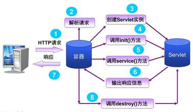
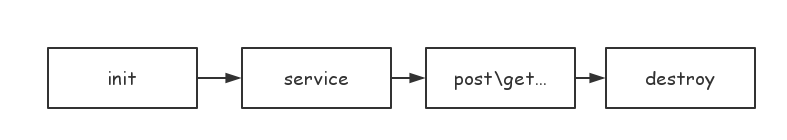
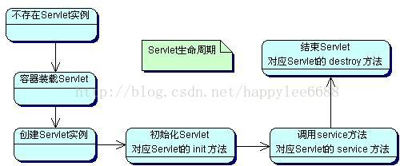

本文为 ThreadLocal 整理和总结
Servlet运行原理

Servlet生命周期定义了一个Servlet如何被加载、初始化，以及它怎样接收请求、响应请求，提供服务。在讨论Servlet生命周期之前，先让我们来看一下这几个方法

该图说明了各个方法的前后调用顺序
init()方法
在Servlet的生命周期中，仅执行一次init()方法，它是在服务器装入Servlet时执行的，可以配置服务器，以在启动服务器或客户机首次访问Servlet时装入Servlet。无论有多少客户机访问Servlet，都不会重复执行init()；
service()方法
它是Servlet的核心，每当一个客户请求一个HttpServlet对象，该对象的Service()方法就要调用，而且传递给这个方法一个“请求”（ServletRequest）对象和一个“响应”（ServletResponse）对象作为参数。在HttpServlet中已存在Service()方法。默认的服务功能是调用与HTTP请求的方法相应的do功能。service是由web容器来调用的，我们无需对service具体内容做任何处理，service会自动的根据客户端的请求类型去调用doGet、doPost等方法，所以我们只需要做好doGet、doPost方法的实现就可以了
doGet、doPost方法
实际的业务处理流程，service根据客户端的请求类型来自动匹配需要执行那个方法。
destroy()方法
仅执行一次，在服务器端停止且卸载Servlet时执行该方法，有点类似于C++的delete方法。一个Servlet在运行service()方法时可能会产生其他的线程，因此需要确认在调用destroy()方法时，这些线程已经终止或完成。
下面来谈谈Servlet的生命周期，Servlet的生命周期是由Servlet容器来控制的，它始于装入Web服务器的内存时，并在终止或重新装入Servlet时结束。这项操作一般是动态执行的。然而，Server通常会提供一个管理的选项，用于在Server启动时强制装载和初始化特定的Servlet。
在代码中，Servlet生命周期由接口javax.servlet.Servlet定义。所有的Java Servlet 必须直接或间接地实现javax.servlet.Servlet接口，这样才能在Servlet Engine上运行。javax.servlet.Servlet接口定义了一些方法，在Servlet 的生命周期中，这些方法会在特定时间按照一定的顺序被调用。

Servlet生命周期
加载和实例化Servlet
我们来看一下Tomcat是如何加载的：
- 如果已配置自动装入选项，则在启动时自动载入。
- 在服务器启动时，客户机首次向Servlet发出请求。
- 重新装入Servlet时。
当启动Servlet容器时，容器首先查找一个配置文件web.xml，这个文件中记录了可以提供服务的Servlet。每个Servlet被指定一个Servlet名，也就是这个Servlet实际对应的Java的完整class文件名。Servlet容器会为每个自动装入选项的Servlet创建一个实例。所以，每个Servlet类必须有一个公共的无参数的构造器。
初始化
当Servlet被实例化后，Servlet容器将调用每个Servlet的init方法来实例化每个实例，执行完init方法之后，Servlet处于“已初始化”状态。所以说，一旦Servlet被实例化，那么必将调用init方法。通过Servlet在启动后不立即初始化，而是收到请求后进行。在web.xml文件中用
初始化失败后，执行init()方法抛出ServletException异常，Servlet对象将会被垃圾回收器回收，当客户端第一次访问服务器时加载Servlet实现类，创建对象并执行初始化方法。
请求处理
Servlet 被初始化以后，就处于能响应请求的就绪状态。每个对Servlet 的请求由一个Servlet Request 对象代表。Servlet 给客户端的响应由一个Servlet Response对象代表。对于到达客户机的请求，服务器创建特定于请求的一个“请求”对象和一个“响应”对象。调用service方法，这个方法可以调用其他方法来处理请求。
Service方法会在服务器被访问时调用，Servlet对象的生命周期中service方法可能被多次调用，由于web-server启动后，服务器中公开的部分资源将处于网络中，当网络中的不同主机（客户端）并发访问服务器中的同一资源，服务器将开设多个线程处理不同的请求，多线程同时处理同一对象时，有可能出现数据并发访问的错误。
另外注意，多线程难免同时处理同一变量时（如：对同一文件进行写操作），且有读写操作时，必须考虑是否加上同步，同步添加时，不要添加范围过大，有可能使程序变为纯粹的单线程，大大削弱了系统性能；只需要做到多个线程安全的访问相同的对象就可以了。
卸载Servlet
当服务器不再需要Servlet实例或重新装入时，会调用destroy方法，使用这个方法，Servlet可以释放掉所有在init方法申请的资源。一个Servlet实例一旦终止，就不允许再次被调用，只能等待被卸载。
Servlet一旦终止，Servlet实例即可被垃圾回收，处于“卸载”状态，如果Servlet容器被关闭，Servlet也会被卸载，一个Servlet实例只能初始化一次，但可以创建多个相同的Servlet实例。如相同的Servlet可以在根据不同的配置参数连接不同的数据库时创建多个实例。
编程注意事项说明
1) 当Server Thread线程执行Servlet实例的init()方法时，所有的Client Service Thread线程都不能执行该实例的service()方法，更没有线程能够执行该实例的destroy()方法，因此Servlet的init()方法是工作在单线程的环境下，开发者不必考虑任何线程安全的问题。
2) 当服务器接收到来自客户端的多个请求时，服务器会在单独的Client Service Thread线程中执行Servlet实例的service()方法服务于每个客户端。此时会有多个线程同时执行同一个Servlet实例的service()方法，因此必须考虑线程安全的问题。
3) 请大家注意，虽然service()方法运行在多线程的环境下，并不一定要同步该方法。而是要看这个方法在执行过程中访问的资源类型及对资源的访问方式。分析如下：
i. 如果service()方法没有访问Servlet的成员变量也没有访问全局的资源比如静态变量、文件、数据库连接等，而是只使用了当前线程自己的资源，比如非指向全局资源的临时变量、request和response对象等。该方法本身就是线程安全的，不必进行任何的同步控制。
ii. 如果service()方法访问了Servlet的成员变量，但是对该变量的操作是只读操作，该方法本身就是线程安全的，不必进行任何的同步控制。
iii. 如果service()方法访问了Servlet的成员变量，并且对该变量的操作既有读又有写，通常需要加上同步控制语句。
iv. 如果service()方法访问了全局的静态变量，如果同一时刻系统中也可能有其它线程访问该静态变量，如果既有读也有写的操作，通常需要加上同步控制语句。
v. 如果service()方法访问了全局的资源，比如文件、数据库连接等，通常需要加上同步控制语句。
总结：
- Servlet类的构造方法只执行一次
- Servlet对象的init方法只执行一次
- Servlet对象的service方法，只要用户请求一次，则执行一次
- Servlet对象的destory方法，只执行一次
- init方法执行的时候，Servlet对象已经被创建好了。
- destory方法执行的时候，Servlet对象还没有被销毁，即将被销毁